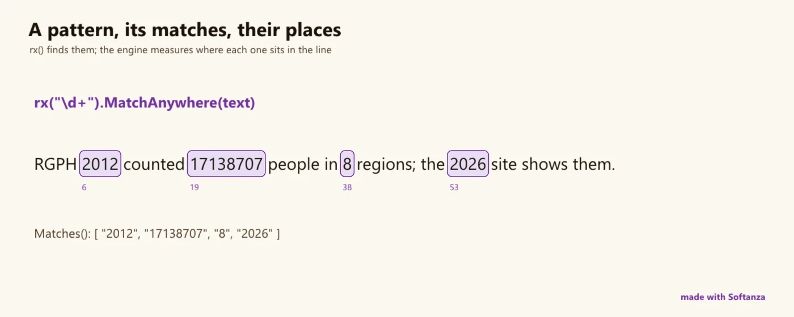

Recherche de motifs
L'expression régulière, avec toute la puissance de PCRE2, en est la porte d'entrée ; six langages de motifs la portent aux listes, aux nombres, au temps, aux tables, aux matrices et aux graphes. Les couloirs notent le moteur de texte.
4 Strong · 5 Solid · 3 Partial · 0 Emerging
Mesuré contre : PCRE2 · RE2 · Oniguruma · Dossiers : base/regex(s'ouvre dans un nouvel onglet) · Le guide des fonctions de ce domaine

Repensé depuis les premiers principes
Ce que Softanza a gardé de ce qui marche, et ce qu'elle a repensé, tel que la bibliothèque l'a écrit dans ses documents de conception et ses narrations.
La manière SoftanzaLa recherche de motifs est une même façon de penser pour toutes les données. L'expression régulière en est la porte d'entrée ; Softanza porte la même idée aux listes, aux nombres, au temps, aux tables, aux matrices et aux graphes, et permet de construire un motif avec des mots ou de l'appeler par son nom.
Gardé des meilleures pratiques
- Chaque correspondance passe par PCRE2 : éprouvé, compatible Unicode et fidèle à la syntaxe que les développeurs connaissent déjà, avec le mode Unicode toujours activé. source(s'ouvre dans un nouvel onglet)
- Les cas simples ne sont pas réinventés : un motif classique, les groupes nommés et les captures s'écrivent comme d'habitude ; Softanza ajoute seulement des noms plus clairs. source(s'ouvre dans un nouvel onglet)
Repensé
- Listex, Matrex, Tablex et Graphex appliquent une même grammaire de motifs aux listes, matrices, tables et graphes, à la place du code conditionnel verbeux des données structurées. source(s'ouvre dans un nouvel onglet)
- Numbrex et Timex décrivent les propriétés d'un nombre (premier, parfait, palindrome) ou les événements et durées d'une chronologie : on dit ce qu'on veut, pas comment le vérifier. source(s'ouvre dans un nouvel onglet)
- stzRegexMaker construit un motif par étapes lisibles, avec des constructeurs conditionnels (wrxm) et d'assertions de contexte (arxm), car la notation cryptique est source d'erreurs et ne documente rien. source(s'ouvre dans un nouvel onglet)
- Des motifs tout faits s'appellent par leur nom — pat(:email), pat(:IPv6) — et s'expliquent avec Explain(), car un motif brut ne dit rien de son intention. source(s'ouvre dans un nouvel onglet)
- Quatre verbes de portée — Match, MatchLine, MatchWord, MatchSegment — remplacent les options dotall, multiligne et limite de mot, car une option posée ailleurs masque le sens du motif. source(s'ouvre dans un nouvel onglet)
- Match() demande si tout le texte épouse le motif ; MatchFirst() demande s'il y apparaît quelque part : deux questions différentes, deux verbes différents. source(s'ouvre dans un nouvel onglet)
Under the hood it is PCRE2 10.47, statically linked, Unicode always on, with an unusually rich Haro layer (100+ methods, four fluent builder classes, a reactive match-to-code engine). On features it is at PCRE2 parity, with lookaround, backreferences, recursion and conditionals that RE2 and Rust refuse. Where it trails the modern engines is the safety-and-throughput story: no JIT, no linear-time matcher, and the ReDoS knob is not reachable from Haro, although the code for both is already compiled into the binary.
Ce qu'un maker en fait, et ce qui se distingue
- Feature-complete PCRE2: lookaround, backrefs, recursion, conditionals that RE2 and Rust deliberately refuse
- The clearest match-semantics API in its class: Match() anchors, MatchFirst() searches, partial as-you-type
- Four fluent builder classes with no native peer
- A reactive RegexUter match-to-code engine
Ce qui est dû
- Wire the linear-time DFA matcher (pcre2_dfa_match is already in the binary)
- Surface the ReDoS limits on the Haro stzRegex class
- Named-group substitution ${name} in replace
- Fix the broken Explain fallback (missing stzRegexAnalyzer) and the builder stubs
La manière Softanza, exécutée
Ce que Softanza fait autrement dans ce domaine, montré par du code tiré de ses narrations et de ses gardes, et exécuté pour cette page.
Une liste se reconnaît à sa forme, comme une expression régulière reconnaît un texte : un nombre puis une chaîne, de un à trois nombres puis une chaîne, tout sauf un nombre.
# a number, then a string
? Lx("[@N, @S]").Match([42, "hello"])
# one to three numbers, then a string
? Lx("[@N1-3, @S]").Match([1, 2, "end"])
# anything but a number
? Lx("[@!N]").Match(["string"])
? Lx("[@!N]").Match([42])1 1 1 0
exécuté le 2026-10-01 21:19 dans la bibliothèque au commit 0e72e2e2c ; tiré de base/doc/narrations/stzlistex-pattern-matching-for-lists.md(s'ouvre dans un nouvel onglet)
Un motif tout fait s'appelle par son nom, se compare à une valeur entière et s'explique en mots simples.
rx(pat(:xlsConditionalExpression)) {
? Match("B2<>C3")
? Pattern() + NL
? Explain() + NL
}1 ^.*(?:=|<|>|<>).*$ Matches an Excel conditional expression
exécuté le 2026-10-01 21:19 dans la bibliothèque au commit 0e72e2e2c ; tiré de base/test/regexmaker/02_match.ring(s'ouvre dans un nouvel onglet)
Un motif conditionnel se déclare comme un si/sinon, format de téléphone international ou local, et le constructeur écrit l'expression régulière.
wrxm() {
IfStartsWith("+").
ThenMatch("\+1\d{10}"). # International format
ElseMatch("\d{10}") # Local format
? Pattern()
}(?(?=^\+)\+1\d{10}|\d{10})exécuté le 2026-10-01 21:19 dans la bibliothèque au commit 0e72e2e2c ; tiré de base/test/regexmaker/34_validate_phone_numbers.ring(s'ouvre dans un nouvel onglet)
Un nombre se reconnaît à ce qu'il est : 17 correspond au motif des nombres premiers, 18 non.
Nx = new stzNumbrex("{@Property(Prime)}")
? Nx.Match(17)
? Nx.Match(18)1 0
exécuté le 2026-10-01 21:19 dans la bibliothèque au commit 0e72e2e2c ; tiré de base/test/numbrex/02_basic_property_matching.ring(s'ouvre dans un nouvel onglet)
Les couloirs, un par un
Les couloirs et leurs notes sont cités tels qu'ils ont été lus à la source, le Read from the source on 2026-09-16.